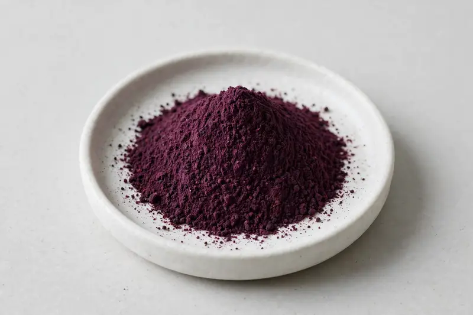

Spray-dried blackberry powder positioned around anthocyanins for beverage and cosmetic formulation work.

Overview
Blackberry extract is a spray-dried berry powder from Rubus fruticosus, positioned around its anthocyanin content for both ingestible and topical concepts. Demand spans beverage brands seeking deep berry color and flavor, and cosmetic formulators looking at anthocyanin-rich botanical inputs. As a trading company in Xi'an, we match briefs to partner production; feasibility is confirmed after receiving the buyer's target specification.
Specifications below reflect commonly requested options in the market — not a stock list. Share your target spec and we'll confirm exactly what we can supply, honestly.
| Specification | Details |
|---|---|
| Botanical identity | Blackberry extract powder, spray-dried, food-grade |
| Marker compound | Commonly requested spec grades: anthocyanin content by UV or HPLC; actual specs confirmed on inquiry |
| Appearance | Deep purple to dark reddish-purple fine powder |
| Analytical methods | Methods referenced in buyer specifications: HPLC, UV |
| Mesh size | Typically 80–100 mesh (confirm per inquiry) |
| Testing | COA/TDS arranged on request; scope agreed per your spec |
Applications
Documentation
We don't claim in-house labs or certifications we don't hold. COA and TDS documents can be arranged on request, and testing scope is agreed against your specification before supply.
FAQ
Related products
Rubus occidentalis
Key marker: Anthocyanin Content
View specs →Garcinia cambogia
Key marker: HCA 50-60%
View specs →Amorphophallus konjac
Key marker: Glucomannan 90%+
View specs →Salvia officinalis
Key marker: 10:1 / rosmarinic acid
View specs →L-selenomethionine
Key marker: Selenium Content
View specs →calcium citrate
Key marker: Calcium Content
View specs →Send your target spec and volumes — we'll respond with a tailored quotation.
Request a Quote